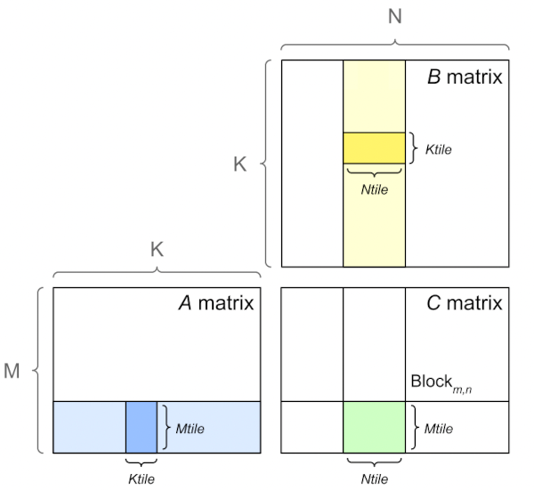
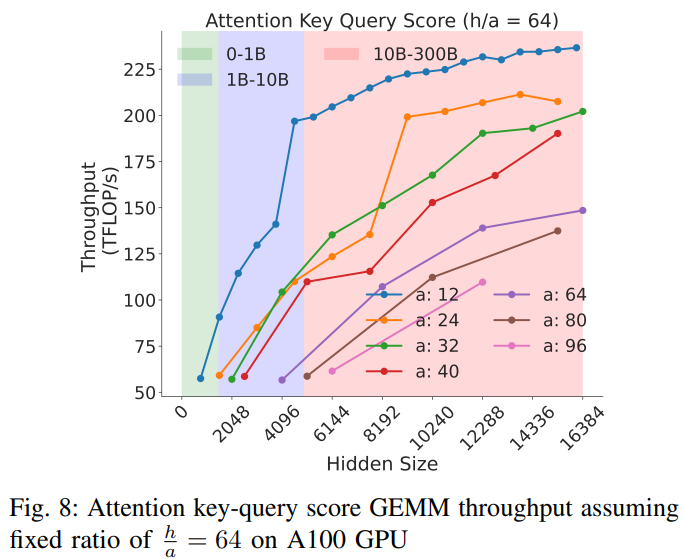
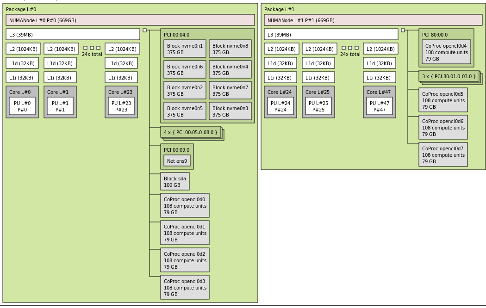

Software Tune Up For The Best Performance
The faster you can make your model to train the sooner the model will finish training, which is important not only to being first to publish something, but also potentially saving a lot of money.
In general maximizing throughput is all about running many experiments and measuring the outcome and choosing the one that is superior.
In certain situations your modeling team may ask you to choose some hyper parameters that will be detrimental to throughput but overall beneficial for the overall model's success.
Glossary and concepts
- HFU: Hardware FLOPS Utilization
- MFU: Model FLOPS Utilization
MACs vs FLOP vs FLOPS vs FLOP/s
This section is here to try to disambiguate the common performance metric definitions and their relationship to each other.
MAC vs FLOP:
-
1 FLOP (FLoating point OPeration) can be one of addition, subtraction, multiplication, or division operation.
-
1 MAC (Multiply-ACCumulate) operation is a multiplication followed by an addition, that is:
a * b + c
Thus 1 MAC = 2 FLOPs. It's also quite common for modern hardware to perform 1 MAC in a single clock cycle.
Please note that to calculate the number of MACs in relationship to FLOPs the reverse logic applies, that is MACs = 0.5 FLOPs - it's somewhat confusing since we have just said that 1 MAC = 2 FLOPs, but it checks out - observe: 100 FLOPs = 50 MACs - because there are 2 FLOPs in each MAC.
Moreover, while 1 MAC = 2 FLOPs, the reverse isn't necessarily true. That is 2 FLOPs isn't necessarily equal to 1 MAC. For example, if you did .5*.6 100 times it'd be 100 FLOPs, which here would equal to 100 MACs, because here only the multiply part of the MAC is executed.
FLOP vs FLOPS vs FLOP/s
-
1 FLOP (FLoating point OPeration) is any floating point addition, subtraction, multiplication, or division operation.
-
1 FLOPS (FLoating point OPeration per Second) is how many floating point operations were performed in 1 second - see FLOPS
Further you will find the following abbreviations: GFLOPS = Giga FLOPS, TFLOPS = Tera FLOPS, etc., since it's much easier to quickly grasp 150TFLOPS rather than 150000000000000FLOPS.
There is an ambiguity when FLOPS is used in writing - sometimes people use it to indicate the total quantity of operations, at other times it refers to operations per second. The latter is the most common usage and that is the definition used in this book.
In scientific writing FLOP/s is often used to clearly tell the reader that it's operations per second. Though this particular approach is hard to convert to a variable name since it still becomes flops when illegal characters are removed.
In some places you might also see FLOPs, which again could mean either, since it's too easy to flip lower and upper case s.
If the definition is ambiguous try to search for context which should help to derive what is meant:
- If it's a math equation and there is a division by time you know it's operations per second.
- If speed or performance is being discussed it usually refers to operations per second.
- If it talks about the amount of compute required to do something it refers to the total amount of operations.
TFLOPS as a performance metric
Before you start optimizing the performance of your training setup you need a metric that you can use to see whether the throughput is improving or not. You can measure seconds per iteration, or iterations per second, or some other such timing, but there is a more useful metric that measures TFLOPS.
Measuring TFLOPS is superior because without it you don't know whether you are close to the best performance that can be achieved or not. This measurement gives you an indication of how far you're from the peak performance reported by the hardware manufacturer.
In this section I will use BLOOM's training for the exemplification. We used 80GB A100 NVIDIA GPUs and we trained in mixed bf16 regime. So let's look at the A100 spec which tells us:
BFLOAT16 Tensor Core 312 TFLOPS
Therefore we now know that if we were to only run matmul on huge bf16 matrices of very specific dimensions without copying to and from the device we should get around 312TFLOPS max.
Practically though, due to disk IO, communications and copying data from the GPU's memory to its computing unit overhead and because we can't do everything in bf16 and at times we have to do math in fp32 (or tf32) we can really expect much less than that. The realistic value will vary from accelerator to accelerator, but for A100 in 2022 getting above 50% (155TFLOPS) was an amazing sustainable throughput for a complex 384 GPUs training setup.
footnote: in 2023 the invention of flash attention and other techniques have pushed the bar to more than 50%.
When we first started tuning things up we were at <100TFLOPS and a few weeks later when we launched the training we managed to get 150TFLOPS.
The important thing to notice here is that we knew that we can't push it further by much and we knew that there was no more point to try and optimize it even more.
So a general rule of thumb for when you prepare for a massive model training - ask around what's the top TFLOPS one can expect to get with a given accelerator on a multi-node setup with the specified precision - and optimize until you get close to that. Once you did stop optimizing and start training.
footnote: For 80GB A100s in 2022 that was 155, in 2023 it has been pushed to about 180TFLOPS.
footnote: When calculating TFLOPS it's important to remember that the math is different if Gradient checkpointing is enabled, since when it's activated more compute is used and it needs to be taken into an account. Usually the cost is of an additional forward path, but recently better methods have been found that saves some of that recomputation.
For decoder transformer models the following is an estimation formula which slightly under-reports the real TFLOPS:
TFLOPS: model_size_in_B * 4 * 2 * seqlen * global_batch_size / (time_in_sec_per_iteration * total_gpus * 1e3)
The factor of 4 is used with activation/gradient checkpointing, otherwise it will be 3. For 100B+ models, activation checkpointing will almost always be on.
So the 3*2 is often called "model FLOPs" and 4*2 - "hardware FLOPs", correlating to MFU and HFU (model and hardware FLOPS per second divided by the accelerator's theoretical peak FLOPS)
perl -le '$ng=64; $ms=52; $gbs=1024; $sp=127; $seqlen=2048; print $ms*4*2*$seqlen*$gbs / ( $sp * $ng * 1e3)'
(ng = total gpus, ms = model size in B, gbs = global batch size, sp = seconds per iteration)
Here is the same formula using bash env vars and which breaks down GBS into MBS*DP*GAS (GAS in this case corresponded to pp_chunks which was the number of chunks in the pipeline, but normally GAS just stands for Gradient Accumulation Steps):
echo "($MSIZE*4*2*SEQLEN*$MICRO_BATCH_SIZE*$DP_SIZE*$GAS)/($THROUGHPUT*$NNODES*$GPUS_PER_NODE*1000)" | bc -l
($GPUS_PER_NODE = accelerators per node, so $NNODES*$GPUS_PER_NODE is total GPUs - the same role as $ng in the Perl one-liner above)
The exact formula is in Equation 3 of Section 5.1 of the Efficient Large-Scale Language Model Training on GPU Clusters Using Megatron-LM paper. You can see the code here.
footnote: For Inference only it'd be: 24Bsh^2 + 4Bs^2h floating point operations per layer.
Automating FLOP calculation
Manual FLOP calculation, as explained in the previous section, is difficult to get right - many of those formulas have mistakes in them, and many models behave differently depending on various configuration settings. So it can be tricky to get the FLOP count correctly (and across many different model architectures). The PyTorch team developed an automatic way of measuring FLOPs.
from torch.utils.flop_counter import FlopCounterMode
flop_counter = FlopCounterMode(mods=model, display=False, depth=None)
with flop_counter:
model(**input).sum().backward()
total_flops = flop_counter.get_total_flops()
Voila, you have the FLOPs counted for you! In theory, at least. In practice FlopCounterMode has proved to have multiple problems impacting performance and memory usage that as of 2026-08 it can't be relied on to replace the manual calculation - so expect to still need the formulas from the previous section, and to treat the counter as a cross-check rather than as the answer.
In my code I run it only on a 2nd iteration (as the first iteration is likely to have some additional compute that is run once). You don't need to repeat it again, you can just cache its value (well, unless you have a situation where iterations aren't the same for some reason).
So all that remains is measuring the time it took each specific iteration to run and dividing FLOPs by time in seconds and 1e12 to get the performance TFLOPS.
tflops = total_flops / time / 1e12
This will give you a slightly different value on each iteration.
MFU vs HFU
Model FLOPS Utilization (MFU) and Hardware FLOPS Utilization (HFU) estimate how well the hardware is being utilized during forward and backward passes of the model (including any syncing networking overhead and possibly DataLoader IO).
MFU = Estimated_Achieved_FLOPS / Theoretical_FLOPS
HFU = Actual_Achieved_FLOPS / Theoretical_FLOPS
HFU measures the actual FLOPS. For example, the technique of Gradient checkpointing/Activation Recomputation repeats all or some parts of the forward pass a second time, so factually more FLOS (FLoating point OperationS) are used. Whereas MFU ignores implementation details and accounts only for the theoretical needs of the computation and is thus less accurate.
Reducing Activation Recomputation in Large Transformer Models is a good paper to read about these concepts.
Theoretical_FLOPS is what you see on the official accelerator specs. You can find the table of these values for high end accelerators here. So let's use H100 as an example. Its BF16 theoretical TFLOPS is 989TFLOPS.
Now, say, you measured your actual training loop's performance and it was 400TFLOPS as actual achieved FLOPS. Then your HFU is:
HFU = 400/989 = 40%
If you didn't use activation recomputation feature (not repeating forward) your HFU and MFU would be the same. If you did use it, MFU will be lower than HFU, because MFU counts only the theoretical forward/backward FLOPs while HFU also counts the extra recomputation FLOPs.
For example Megatron-LM published the following stats for A100-80GB:
| Model Size | Model FLOPs Utilization | Hardware FLOPs Utilization |
|---|---|---|
| 22B | 41.5% | 43.7% |
| 175B | 51.4% | 52.8% |
| 530B | 56.0% | 57.0% |
| 1T | 56.3% | 57.0% |
As you can see, since Megatron-LM was using activation recomputation for these trainings, MFU < HFU.
More recent H100+A100 MFU/HFU numbers have been published here.
Now, whenever you see MFU or HFU numbers published you have to be careful comparing those numbers to any other similar numbers, until you know that the same way was used to calculate FLOPS. Since HFU=Actual_Achieved_FLOPS/Theoretical_FLOPS and Theoretical_FLOPS are fixed, the only variable here is the Actual_Achieved_FLOPS and since most of the time an estimated value is calculated based on parameter shapes, there are many versions of calculations out there, some of which are slightly imprecise whereas others are very imprecise. Compilers may also impact the effective FLOPs, by optimizing some operations away. Moreover you don't know how iteration time was measured.
To recall TFLOPS = FLOS / iteration_duration. So, in order to do a fair comparison the 2 main questions to ask are:
1. Was the total used floating point operations calculated in the same way?
2. Was the time component calculated back-to-back of each iteration, including the DataLoader and logging, vs only fwd+bwd parts.
If either one or both of these mismatch then you can't make a fair comparison.
Unfortunately, most of the time papers and blog posts just report the MFU number w/o a link to how it was calculated.
But, do not fear, if you have trouble comparing your results with competing results, remember the measurement artifacts described above. These artifacts do not improve the bottom-line throughput, thus, as long as you consistently use whatever way you choose to calculate TFLOPS, you will immediately see when your application's performance has improved or degraded, as relative numbers are most important for you.
MFU is a very rough approximation
Most of the training/finetuning regimes use a mixed precision, yet when MFU/HFU are calculated the fastest format's compute is used. For example, for a BF16-mixed precision training some parts of the compute are done in BF16, yet others in FP32! but we measure the FLOPS as if everything was done in BF16, which, of course, leads to a very imprecise measurement. Ideally, each segment of the compute will be measured separately to account to when which format was used. The reason it sort of works is because the smaller format compute usually dominates those mixed precision training regimes.
Moreover, depending on the cluster setup - in particular storage IO and network IO are heavily involved, the same software may deliver different MFUs, because not all clusters are created equal. Therefore it's OK to compare your particular setup's MFU before and after the optimization, but it's very difficult to compare your setup's MFU to another team's cluster's MFU.
How To Improve Speed and Save Memory
The more GPU memory you have for your batch size (BS) the more efficient the GPUs will be at performing compute, and the faster you will complete your task since you will be able to go through data faster.
Of course, this section is crucial for when you get GPU OOM with even BS=1 and you don't want to rent/buy more hardware.
Here is an overview of what features can help to either improve speed or save memory
| Method | Speed | Memory |
|---|---|---|
| Gradient accumulation | Yes | Yes |
| Gradient checkpointing | No* | Yes |
| Mixed precision training | Yes | No |
| Batch size | Yes | Yes |
| Optimizer choice | Yes | Yes |
| DataLoader | Yes | No |
| DeepSpeed ZeRO | No | Yes |
| Flash Attention | Yes | Yes |
* Gradient checkpointing slows things down for the given batch size, but since it frees up a lot of memory, enabling a much larger BS, it actually improves the overall speed.
Anatomy of Model's Operations
Transformers architecture includes 3 main groups of operations grouped below by compute-intensity.
-
Tensor Contractions
Linear layers and components of Multi-Head Attention all do batched matrix-matrix multiplications. These operations are the most compute-intensive part of training a transformer.
-
Statistical Normalizations
Softmax and layer normalization are less compute-intensive than tensor contractions, and involve one or more reduction operations, the result of which is then applied via a map.
-
Element-wise Operators
These are the remaining operators: biases, dropout, activations, and residual connections. These are the least compute-intensive operations.
This knowledge can be helpful to know when analyzing performance bottlenecks.
This summary is derived from Data Movement Is All You Need: A Case Study on Optimizing Transformers 2020
Anatomy of Model's Memory Usage
We've seen that training the model uses much more memory than just putting the model on the GPU. This is because there are many components during training that use GPU memory. The components on GPU memory are the following:
- model weights
- optimizer states
- gradients
- forward activations saved for gradient computation
- temporary buffers
- functionality-specific memory
A typical model trained in mixed precision with AdamW requires 18 bytes per model parameter plus activation memory and temp memory.
Let's look at the details.
Model Weights:
- 4 bytes * number of parameters for fp32 training
- 6 bytes * number of parameters for mixed precision training (maintains a model in fp32 and one in fp16/bf16 in memory)
Optimizer States:
- 8 bytes * number of parameters for normal AdamW (maintains 2 states)
- 4 bytes * number of parameters for AdamW running at bf16. See this work that uses
AnyPrecisionAdamW. - 4 bytes * number of parameters for optimizers like SGD with momentum (maintains only 1 state) or LION, or Adafactor (and others) (Adafactor uses some additional memory beside 4 bytes)
- 2 bytes * number of parameters for 8-bit AdamW optimizers like bitsandbytes
Gradients
- 4 bytes * number of parameters for either fp32 precision and in some frameworks with mixed half-precision training.
- 2 bytes * number of parameters for non-mixed half-precision and in some frameworks with mixed half-precision training.
Forward Activations
- size depends on many factors, the key ones being sequence length, hidden size and batch size.
There are the input and output that are being passed and returned by the forward and the backward functions and the forward activations saved for gradient computation.
Here is a rough breakdown of activation memory per GPU:
- Activation working memory:
dtype_size * num_of_hidden_states_copies * bs * seqlen * hidden_size - Activation checkpoints memory:
dtype_size * num_layers * bs * seqlen * hidden_size - Logits working memory:
fp32_size * bs * seqlen * vocab_size
In all the following calculations:
- dtype_size: size of the one element of dtype being used, e.g. 1 byte for fp8, 2 for bf16, 4 for fp32, etc. - see Tensor precision / Data types for the full set
- fp32_size: 4 bytes
- bs: batch size
- hidden_size: hidden size of the model
- seqlen: the sequence length
- num_layers: the number of layers the model has
- vocab_size: vocabulary size
And dtype_size * bs * seqlen * hidden_size is the size of the hidden_states tensor, because that's its shape [bs, seqlen, hidden_size] multiplied by the size in bytes of a single element.
In the following explanation let's use the Llama-3 architecture and its 8B configuration:
hidden_size=4096
num_layers=32
vocab_size=128256
and let's use
dtype=bf16 (2 bytes)
bs=1
seqlen=32768
We can immediately calculate the size of hidden_states tensor in bf16 to be: 2 * 1 * 32768 * 4096 / 2**30 = 0.25GiB
Part 1. So first let's calculate how much working memory is needed to process a single layer forward:
activation_memory_per_layer = num_of_hidden_states_copies * dtype_size * bs * seqlen * hidden_size
The num_of_hidden_states_copies is typically between 20 and 50 and will vary between different model architectures. To get a good feeling for the variations - let's measure a handful of models using activation-memory-per-layer.py. What we get is:
24.0 "HuggingFaceTB/SmolLM2-360M"
28.0 "meta-llama/Llama-3.1-8B-Instruct"
28.0 "mistralai/Mistral-7B-Instruct-v0.3"
29.8 "deepseek-ai/DeepSeek-R1-0528-Qwen3-8B"
38.0 "Qwen/Qwen3-4B"
48.0 "google/gemma-1.1-2b-it"
So it's easy to see that Gemma makes two times more copies of hidden_states than SmolLM2 to compute a single layer forward.
It'd be difficult to compare the models exactly if their hidden_size isn't the same, but comparing the num_of_hidden_states_copies co-efficient is easy.
Clearly some architectures allocate additional memory besides copies of hidden_states as can be seen with deepseek-ai/DeepSeek-R1-0528-Qwen3-8B whose co-efficient isn't an integer.
Now to our example model:
activation_memory_per_layer = 2 * 28 * 1 * 32768 * 4096 / 2**30 = 7GiB (28 came from the measurements output a few paragraphs earlier for meta-llama/Llama-3.1-8B-Instruct).
Part 2. Now that we know the memory allocated by each layer, 2 possible things will happen next depending on whether gradient checkpointing is enabled or not:
- If it's enabled, then we need to store
num_layers * hidden_states.
In our example that would be: 32 * 0.25 = 8GiB (we calculated hidden_states = 0.25GiB earlier).
- If it's not enabled, then activation memory will grow to
num_layers * activation_memory_per_layer.
In our example that would be: 32 * 7 = 224GiB
Notice 8GiB vs 224GiB - that's a huge difference - therefore, clearly everybody activates the gradient checkpointing feature despite the cost of recalculating the forward pass a second time.
Part 3. Finally we have the loss calculation which typically requires manifesting the logits in fp32 and here the vocab_size dimension is typically the biggest dimension, hence: fp32_size * bs * seqlen * vocab_size
In our example that would be: 4 * 1 * 32768 * 128256 / 2**30 = 15.7GiB (~16GiB)
As you can see logits will use more memory than all the checkpointing activations for this model.
Moreover, practically you typically end up with a factor of 6 instead of 4 for dtype_size, since usually logits is first created in the lower precision and then upcast to fp32 so you have 2 copies of it, thus 2+4=6.
Part 4. Total required activation memory is the sum of memory needed to compute one layer forward + activation checkpoints + logits activation memory when using gradient checkpointing. When not using gradient checkpointing it's the sum of 2 and 3, i.e. all the forwards activations and the logits memory.
In our example:
- w/ gradient checkpointing:
7 + 8 + 16 = 31GiB - w/o gradient checkpointing:
224 + 16 = 240GiB
Temporary Memory
Additionally there are all kinds of temporary variables which get released once the calculation is done, but in the moment these could require additional memory and could push to OOM. Therefore when coding it's crucial to think strategically about such temporary variables and sometimes to explicitly free those as soon as they are no longer needed.
Functionality-specific memory
Then your software could have special memory needs. For example, when generating text using beam search, the software needs to maintain multiple copies of inputs and outputs.
For inference, the math is very similar to training, minus optimizer states and gradients. And for model weights there is just a single multiplier of the number of parameters:
- 4 bytes in fp32
- 2 bytes in fp16/bf16
- 1 byte in fp8/int8
- 0.5 bytes in fp4/int4
See Model Weights in the inference chapter for lower-precision and quantized formats, including fp8, fp6, fp4, integer quantization, and MX formats.
Another excellent resource that takes you through the memory needs and other requirements is Transformer Math 101.
The EAI cookbook contains a set of calculation scripts that can output the theoretical memory overhead for a given training or inference calculation run based on your configuration and setup.
There is a very handy GPU VRAM Estimator from Alexander Smirnov, and the notes to how it works.
Additional GPU memory usage
In addition to the memory usage described in the previous section, there are other consumers of the GPU memory - so you never get the full memory for your model's use.
Preloaded CUDA kernels memory usage
When PyTorch uses CUDA for the first time, it may use up 0.5-2GiB of GPU memory, reducing the GPU's total available memory. This memory won't be accounted for by torch memory profiler.
The size of allocated memory for cuda kernels varies between different GPUs, and also it can be different between pytorch versions. Let's allocate a 4-byte tensor on cuda and check how much GPU memory is used up upfront.
With pytorch==1.10.2:
$ CUDA_MODULE_LOADING=EAGER python -c "import torch; x=torch.ones(1).cuda(); free, total = map(lambda x: x/2**30, torch.cuda.mem_get_info()); \
used=total-free; print(f'pt={torch.__version__}: {used=:0.2f}GiB, {free=:0.2f}GiB, {total=:0.2f}GiB')"
pt=1.10.2: used=1.78GiB, free=77.43GiB, total=79.21GiB
With pytorch==1.13.1:
$ CUDA_MODULE_LOADING=EAGER python -c "import torch; x=torch.ones(1).cuda(); free, total = map(lambda x: x/2**30, torch.cuda.mem_get_info()); \
used=total-free; print(f'pt={torch.__version__}: {used=:0.2f}GiB, {free=:0.2f}GiB, {total=:0.2f}GiB')"
pt=1.13.1: used=0.90GiB, free=78.31GiB, total=79.21GiB
The older pytorch "wasted" 1.78GiB of an A100 where the newer used only 0.9GiB - and 0.9GiB recovered can be the saving grace in an OOM situation.
Do not read that as a one-way trend, though. This overhead is a side effect of how a given pytorch and CUDA version happen to package and load their kernels, so it moves in both directions between releases: it nearly halved from 1.10.2 to 1.13.1, then edged back up slightly by 2.1.1 below. The figures here are from 2022-2023 and are kept because they show how wide the swing can be - close to a gigabyte on the same GPU purely from a version change. Treat them as an illustration of the effect rather than as numbers to plan against, and run the one-liner above on your own combination of GPU, pytorch and CUDA to get the figure that actually applies to you.
CUDA_MODULE_LOADING=EAGER is needed in the recent pytorch version if we want to force cuda kernels pre-loading, which are otherwise lazy-loaded on demand. But do not use this setting in production since it's likely to use more memory than needed. The whole point of lazy-loading is to load only the kernels that are needed.
With pytorch==2.1.1:
$ CUDA_MODULE_LOADING=EAGER python -c "import torch; x=torch.ones(1).cuda(); free, total = map(lambda x: x/2**30, torch.cuda.mem_get_info()); \
used=total-free; print(f'pt={torch.__version__}: {used=:0.2f}GiB, {free=:0.2f}GiB, {total=:0.2f}GiB')"
pt=2.1.1+cu121: used=0.92GiB, free=78.23GiB, total=79.15GiB
As compared to the lazy mode:
$ python -c "import torch; x=torch.ones(1).cuda(); free, total = map(lambda x: x/2**30, torch.cuda.mem_get_info()); \
used=total-free; print(f'pt={torch.__version__}: {used=:0.2f}GiB, {free=:0.2f}GiB, {total=:0.2f}GiB')"
pt=2.1.1+cu121: used=0.47GiB, free=78.68GiB, total=79.15GiB
There is a 450MiB difference, but here we only loaded kernels to do torch.ones - the actual memory allocated at run time with other code using torch API will be somewhere between 0.47 and 0.92GiB.
torch.distributed memory usage
When using torch.distributed expect ~1-2GiB of GPU memory taken away just to initialize things - the more GPUs the higher the memory used. Different backends are likely to use a different amount of memory. And this memory won't be accounted for by torch memory profiler.
Here is torch-dist-mem-usage.py that demonstrates the actual memory usage:
$ python -u -m torch.distributed.run --nproc_per_node=2 --rdzv_endpoint localhost:6000 --rdzv_backend c10d \
torch-dist-mem-usage.py
[...]
[0] mp: before barrier
[0] mp: MA 0.00 GiB | Max_MA 0.00 GiB | CA 0.00 GiB | Max_CA 0.00 GiB | NV 0.55 GiB | CPU Virtual Memory: used = 68.79 GiB, percent = 3.4%
[0] mp: after barrier
[0] mp: MA 0.00 GiB | Max_MA 0.00 GiB | CA 0.00 GiB | Max_CA 0.00 GiB | NV 2.00 GiB | CPU Virtual Memory: used = 69.33 GiB, percent = 3.5%
[0] mp: after 2nd barrier
[0] mp: MA 0.00 GiB | Max_MA 0.00 GiB | CA 0.00 GiB | Max_CA 0.00 GiB | NV 2.00 GiB | CPU Virtual Memory: used = 69.33 GiB, percent = 3.5%
[0] mp: after dist destroy
[0] mp: MA 0.00 GiB | Max_MA 0.00 GiB | CA 0.00 GiB | Max_CA 0.00 GiB | NV 1.28 GiB | CPU Virtual Memory: used = 69.25 GiB, percent = 3.5%
[0] mp: after dist destroy
[0] mp: MA 0.00 GiB | Max_MA 0.00 GiB | CA 0.00 GiB | Max_CA 0.00 GiB | NV 1.28 GiB | CPU Virtual Memory: used = 69.25 GiB, percent = 3.5%
So you can see that the CUDA kernels took 0.55GiB (first line NV 0.55 GiB), but when dist.barrier was run an additional 1.5GiB were consumed. If you run init_process_group with device_id arg then the additional memory allocation will move to that call instead and less will be used by dist.barrier.
Choosing between nccl, nccl2 and nccl-lazy
Starting from PyTorch 2.14, PyTorch's distributed package includes a second implementation over the same NCCL library. Despite its name, nccl2 is not NCCL version 2 and does not replace NCCL's collective algorithms. What it changes is how PyTorch creates, splits, waits for and aborts the communicators those collectives run on. In PyTorch 2.14, init_process_group("nccl") still selects the established ProcessGroupNCCL; select the new implementation explicitly with backend="nccl2", or set TORCH_DIST_USE_NCCL2=1 to make "nccl" resolve to it. The explicit nccl-legacy name always selects the established implementation, and nccl-lazy is a variant of nccl2 that creates a communicator per peer on first use rather than up front.
Measured on an idle 8x H200 node with PyTorch 2.14.0, CUDA 13.0 and NCCL 2.30.7, a 1GiB all_reduce landed between 458 and 466GBps busbw under both, and repeats of a single implementation varied by as much as the gap between the two - so these runs show no throughput difference. Both issue the same NCCL collectives.
The measurable difference was memory. After init_process_group and the first dist.barrier, rank 0's accelerator held 1.56GiB under nccl and 5.16GiB under nccl2 - reproduced across runs, and unchanged by whether device_id was passed. So don't switch expecting faster collectives, and measure the memory cost on your own topology before adopting it. What nccl2 offers instead is control over the communicator's lifetime: subgroups built at new_group time rather than at their first collective, and - through APIs the release marks as unstable as of 2.14 - a group that can be rebuilt in place after a rank dies instead of requiring a restart.
nccl-lazy is for when each rank talks to only a few peers, as in Pipeline Parallelism, since a communicator that is never used is never built. It does not lower peak memory for a group that runs collectives from the first step, because that communicator gets built either way.
Reference: PyTorch 2.14 release blog.
Memory fragmentation
As the model allocates and frees tensors, the GPU memory could fragment. That is there could be enough free memory to allocate, say, 1GiB of contiguous memory, but it could be available in 100s of small segments spread out through the memory and thus even though the memory is available it can't be used unless very small allocations are made.
Environment variable PYTORCH_ALLOC_CONF comes to help and allows you to replace the default memory allocation mechanisms with more efficient ones. For more information see Memory management. I found PYTORCH_ALLOC_CONF=expandable_segments:True to be extremely helpful when the code performs a lot of tensor reshaping, which would normally massively fragment the GPU memory.
Batch sizes
First, there are usually two batch sizes:
-
micro batch size (MBS), also known as batch size per gpu - this is how many samples a single gpu consumes during a model's single
forwardcall. -
global batch size (GBS) - this is the total amount of samples consumed between two optimizer steps across all participating GPUs.
Model replica is how many gpus are needed to fit the full model.
- If the model fits into a single GPU a model replica takes 1 GPU. Usually then one can use multiple GPUs to perform Data Parallelism
- If the model doesn't fit into a single GPU, it'd usually require some sort of sharding technique - it can be Tensor Parallelism (TP), Pipeline Parallelism (PP), or ZeRO Data Parallelism (ZeRO-DP).
You can have as many data streams as there are replicas. Which is the same as the value of DP.
- So in the simple case of a model fitting into a single GPU. There are as many data streams as there are GPUs. DP=N_GPUS
- when the model doesn't fit onto a single GPU, then DP=N_GPUs/(TP*PP) in the case of 3D parallelism and DP=ZeRO-DP in the case of ZeRO parallelism.
Going back to our global batch size (GBS) it's calculated as:
GBS = MBS*DP
So if you have 8 gpus (N_GPUS=8) and your MBS=4 and you do DP you end up with having GBS=32 because:
GBS = MBS*DP = 4*8 = 32
If you use TP with a degree of 2 (TP=2) and PP with a degree of 2 (PP=2) this means each model replica takes 4 gpus (TP*PP), and thus with N_GPUS=8
DP = N_GPUS/(TP*PP) = 8 / (2*2) = 2
and now GBS becomes:
GBS = MBS*DP = 4*2 = 8
If your training setup requires Gradient Accumulation, one usually defines the interval of how many steps to wait before performing a gradient accumulation. The term is usually Gradient Accumulation Steps (GAS). If GAS=4 (i.e. sync grads every 4 steps) and TP=1, PP=1 and DP=8:
DP = N_GPUS/(TP*PP) = 8 / (1*1) = 8
GBS = MBS*DP*GAS = 4*8*4 = 128
Typically you want to make the micro batch size as large as possible so that the GPU memory is close to being full, but not too full.
With large models usually there is not much free GPU memory left to have a large micro batch size, therefore every additional sample you can fit is important.
While it's super important that sequence length and hidden size and various other hyper parameters are high multiples of 2 (64, 128 and higher) to achieve the highest performance, because in most models the batch dimension is flattened with the sequence length dimension during the compute the micro batch size alignment usually has little to no impact on performance.
Therefore if you tried to fit a micro batch size of 8 and it OOM'ed, but 7 fits - use the latter rather than 4. The higher the batch size the more samples you will be able to fit into a single step.
Of course, when using hundreds of GPUs your global batch size may become very large. In that case you might use a smaller micro batch size or use less GPUs or switch to a different form of data parallelism so that the GPUs work more efficiently.
Gradient Accumulation
The idea behind gradient accumulation is to instead of calculating the gradients for the whole batch at once to do it in smaller steps. The way we do that is to calculate the gradients iteratively in smaller batches by doing a forward and backward pass through the model and accumulating the gradients in the process. When enough gradients are accumulated we run the model's optimization step. This way we can easily increase the overall batch size to numbers that would never fit into the GPU's memory. In turn, however, the added forward and backward passes can slow down the training a bit.
Gradient Accumulation Steps (GAS) is the definition of how many steps are done w/o updating the model weights.
When using Pipeline parallelism a very large Gradient Accumulation is a must to keep the pipeline's bubble to the minimum.
Since the optimizer step isn't performed as often with gradient accumulation there is an additional speed up here as well.
The following benchmarks demonstrate how increasing the gradient accumulation steps improves the overall throughput (20-30% speedup):
When data parallelism is used gradient accumulation further improves the training throughput because it reduces the number of gradient reduction calls, which is typically done via the all_reduce collective which costs a 2x size of gradients to be reduced. So for example, if one goes from GAS=1 to GAS=8 in DistributedDataParallelism (DDP) the network overhead is reduced by 8x times, which on a slow inter-node network can lead to a noticeable improvement in the training throughput.
Gradient Checkpointing
Gradient Checkpointing is also known as Activation Recomputation and Activation Checkpointing.
This methodology is only relevant for training, and not during inference.
Enabling gradient checkpointing allows one to trade training throughput for accelerator memory. When this feature is activated instead of remembering the outputs of, say, transformer blocks until the backward pass is done, these outputs are dropped. This frees up huge amounts of accelerator memory. But, of course, a backward pass is not possible without having the outputs of forward pass, and thus they have to be recalculated.
This, of course, can vary from model to model, but typically one pays with about 20-25% decrease in throughput, but since a huge amount of gpu memory is liberated, one can now increase the batch size per gpu and thus overall improve the effective throughput of the system. In some cases this allows you to double or quadruple the batch size if you were already able to do a small batch size w/o OOM. (Recent papers report as high as 30-40% additional overhead.)
For example, in HF Transformers models you do model.gradient_checkpointing_enable() to activate it in your custom Trainer or if you use the HF Trainer then you'd activate it with --gradient_checkpointing 1.
Also check out this the paper: Reducing Activation Recomputation in Large Transformer Models which describes a way to avoid most activation recomputations and thus save both memory and compute.
Offloading the activation checkpoints to CPU memory
Gradient checkpointing still keeps one tensor per checkpointed layer on the accelerator - the layer's input, from which its forward is recomputed. That is layers x sequence x hidden elements, which at long sequence lengths becomes the largest part of the activation memory: Qwen3-8B (36 layers, hidden size 4096) at 128K tokens in bf16 keeps 36 x 131072 x 4096 x 2 bytes = 36GiB of them.
Since transformers==5.17 these tensors can be moved to pinned CPU memory during forward and brought back for backward:
args = TrainingArguments(
gradient_checkpointing=True,
gradient_checkpointing_kwargs={"offload": True},
)
It wraps the model's checkpoint function in PyTorch's save_on_cpu(pin_memory=True), so any model that supports gradient checkpointing supports it. The memory profile in PyTorch memory profiler shows what it does: with the activation checkpoints offloaded, accelerator memory stays flat through forward instead of climbing with each layer, so adding layers no longer adds to it.
Offloading lowers the peak memory usage only if the activation checkpoints are among the tensors held at that peak. If the peak occurs in backward, where gradients dominate, the peak barely moves: Qwen3-1.7B at 32K tokens frees 3.5GiB after forward, yet its peak drops only from 11.13GB to 10.16GB.
There are two costs. The offloaded tensors now sit in CPU memory, which adds up over a node: Llama-70B at a 3M-token sequence split over 32 accelerators with Arctic Long Sequence Training needs 915GiB of CPU memory per node for the offloaded activation checkpoints alone. And the copies run on the same CUDA stream as the compute, with no prefetch ahead of backward, so each step gets slower.
footnote: as of 2026-10 this is an inefficient implementation: both copies run on the compute stream, and nothing is prefetched ahead of backward. The ActivationOffloadManager of Arctic Platform has close to 0 overhead, because it copies on CUDA streams separate from the compute stream, so the copies overlap with compute, and it prefetches each layer's activation checkpoint ahead of its backward.
Memory-efficient optimizers
The most common optimizer is Adam. It and its derivatives all use 8 bytes per param (2x fp32 tensors - one for each momentum), which account for almost half the memory allocation for the model, optimizer and gradients. So at times using other optimizers may save the day, if they successfully train that is. Not all optimizers are suitable for all training tasks.
4-byte optimizers:
-
There are optimizers like Adafactor that need only 4 bytes. Same goes for the LION optimizer.
-
AnyPrecisionAdamW. Some courageous souls try to do the whole training in BF16 (not mixed precision!), including the optimizer and thus need only 4 bytes per parameter for optim states. See this work. Hint: this optimizer requires Kahan summation and/or stochastic rounding, see Revisiting BFloat16 Training (2020). You need only 8 bytes per parameter for weights, optim states and gradients here! Instead of 18!
2-byte optimizers:
- There are quantized solutions like
bnb.optim.Adam8bitwhich uses only 2 bytes instead of 8 (1 byte per momentum). You can get it from here. Once installed, if you're using HF Trainer, you can enable it on with just passing--optim adamw_bnb_8bit!
For speed comparisons see this benchmark Speed-wise:apex's apex.optimizers.FusedAdam optimizer is so far the fastest implementation of Adam. Since pytorch-2.0 torch.optim.AdamW added support for fused=True option, which brings it almost on par with apex.optimizers.FusedAdam.
Model execution speed
forward vs backward Execution Speed
For convolutions and linear layers there are 2x flops in the backward compared to the forward, which generally translates into ~2x slower (sometimes more, because sizes in the backward tend to be more awkward). Activations are usually bandwidth-limited, and it’s typical for an activation to have to read more data in the backward than in the forward (e.g. activation forward reads once, writes once, activation backward reads twice, gradOutput and output of the forward, and writes once, gradInput).
Input data affects measured speed
Measured step time depends on the values in the tensors, not only on their shapes. High-entropy inputs flip more transistors per cycle, draw more power, and can pull the boost clock down under the same power / thermal envelope that low-entropy or all-zero inputs leave alone - so an identical kernel may complete its compute at different times than on low-entropy or all-zero inputs of the same shape. For a training or inference bench this means: seed the RNG that builds the inputs (torch.manual_seed(...)), and feed a realistic distribution rather than zeros. The effect is small when the distribution is held fixed, but it is not zero. Full write-up, including the power and denormal mechanisms and the citations, under Input data affects measured performance. This is about timing conditions; for numerical determinism see Reproducibility.
Vector and matrix size divisibility
The paper, The Case for Co-Designing Model Architectures with Hardware investigates the effects of transformer sizing on the underlying hardware. The associated scripts allow you to run the benchmarks yourself if you're running on hardware besides NVIDIA V100/A100.
One gets the most efficient performance when batch sizes and input/output neuron counts are divisible by a certain number, which typically starts at 8, but can be much higher as well. That number varies a lot depending on the specific hardware being used and the dtype of the model.
For fully connected layers (which correspond to GEMMs), NVIDIA provides recommendations for input/output neuron counts and batch size.
Tensor Core Requirements define the multiplier based on the dtype and the hardware. For example, for fp16 a multiple of 8 is recommended, but on A100 it's 64!
For parameters that are small, there is also Dimension Quantization Effects to consider, this is where tiling happens and the right multiplier can have a significant speedup.
The Case for Co-Designing Model Architectures with Hardware provides much greater detail on tile/wave quantization and the number of attention heads, but the highlights are:
Tile and wave quantization
Notation:
a: Number of attention headsh: Hidden dimension sizes: Sequence lengthb: Microbatch sizet: Tensor-parallel size
First, some background.
NVIDIA GPUs divide the output matrix into regions or tiles as shown in the below figure and schedule them to one of the available streaming multiprocessors (SM) on the GPU (e.g., A100 GPUs have 108 SMs). Each tile or thread block is processed in a Tensor Core, which NVIDIA introduced for fast tensor operations. NVIDIA Tensor Cores are only available for GEMMs with appropriate dimensions. Tensor Cores can be fully utilized when GEMM dimensions m, k, and n are multiples of 16 bytes and 128 bytes for V100 and A100 GPUs, respectively. Since a FP16 element is 2 bytes, this corresponds to dimension sizes that are multiples of 8 and 64 elements, respectively. If these dimension sizes are not possible, Tensor Cores perform better with larger multiples of 2 bytes.

There are multiple tile sizes that the kernel can choose from. If the GEMM size does not divide evenly into the tile size, there will be wasted compute, where the thread block must execute fully on the SM, but only part of the output is necessary. This is called the tile quantization effect, as the output is quantized into discrete tiles.
Another quantization effect is called wave quantization. As the thread blocks are scheduled to SMs, only as many thread blocks as there are SMs may be scheduled at a time - 108 on A100, and 132 on H100/H200 (measured with torch.cuda.get_device_properties(0).multi_processor_count, so substitute your own accelerator's count before using any of the numbers here). Taking A100's 108: if 109 thread blocks must be scheduled, two rounds, or waves, of thread blocks must be scheduled to GPU. The first wave will have 108 thread blocks, and the second wave will have 1. The second wave will have almost the same latency as the first, but with a small fraction of the useful compute. As the matrix size increases, the last or tail wave grows. The throughput will increase, until a new wave is required. Then, the throughput will drop.
What this means for transformers, is that for a given ratio of h/a, one needs to ensure they're on the crest of a wave. If you're using NVIDIA V100/A100 GPUs, we've already done this work for you in https://arxiv.org/pdf/2401.14489
An example of this for 32 attention heads:

More powers of 2 in h/a helps!
Do more SMs give more TFLOPS?
Take two accelerators identical for a given dtype - same matmul units per SM, same FMAs per clock, same clock - where one has more SMs. Theoretical peak scales linearly with the count, because that is how it is derived - clock * FMAs_per_clock_cycle_per_compute_unit * 2 * num_compute_units - and that last term is a fixed multiple of the SM count: 4 Tensor Cores per SM on NVIDIA's Ampere, Hopper and Blackwell, with AMD and Intel counting their own units. Only the fixedness matters here. Achievable throughput does not scale linearly, and the gap is wave quantization.
A GEMM decomposes into C thread blocks, C = ceil(m/Tm) * ceil(n/Tn) for a Tm x Tn tile. On S SMs that takes W = ceil(C/S) waves, and since a wave costs the same whether it is full or not, time is proportional to W. So for S1 < S2 the speedup is not S2/S1 but:
speedup = ceil(C/S1) / ceil(C/S2)
gives us a plot, which is a staircase, not a line. For example, B300 ships in at least two SKUs, with 148 and 152 SMs - same silicon, same clock, an SM ratio of 152/148 = 1.027:
| thread blocks | waves @148 | waves @152 | speedup | what happens |
|---|---|---|---|---|
| 148 | 1 | 1 | 1.000x | one wave on both - 4 SMs idle |
| 152 | 2 | 1 | 2.000x | crossover - 2x from 2.7% more SMs |
| 296 | 2 | 2 | 1.000x | no gain - 296 = 2 x 148 fills 148 exactly |
| 304 | 3 | 2 | 1.500x | crossover again |
| 3584 | 25 | 24 | 1.042x | a real transformer MLP shape, see below |
| 50000 | 338 | 329 | 1.027x | asymptote at the 1.027x SM ratio |
footnote: thread blocks are also known as Cooperative Thread Array (CTA)
2.7% more SMs buys anywhere from nothing to 2x, on shape alone. Below one wave the extra SMs have no work. At a crossover the narrower part pays for a nearly-empty second wave and loses by up to 2x. Once both need the same wave count they tie again, and now the wider part wastes more: at C = 296 the 148-SM part packs two waves exactly while the 152-SM part idles 8 slots in its second. Only as C grows does the advantage settle on the SM ratio - still 1.4% off at 3584, within 0.03% by 50000 - which is why vendors quote peak on enormous matmuls, the one place the staircase is flat.
The 3584 row is a shape you actually run: the MLP up-projection of a Llama-3.1-8B forward pass at 8K tokens. hidden_size=4096 and intermediate_size=14336 give an 8192 x 14336 output, which over a 128 x 256 tile is 64 * 56 = 3584 blocks, once per layer for 32 layers. It lands above the 1.027x ratio - the staircase straddles the ratio rather than approaching it from below.
So an SM count does not tell you a throughput advantage without your shapes, and a shape tuned on one part can land on the wrong side of a crossover on another. To place yourself, count your blocks and divide by your own SM count.
A published peak is an aggregate over the whole part, never a per-SM rate: B300's 2250TFLOPS bf16 is what all 148 SMs deliver together, about 15.2 each. A single-wave matmul is bounded by that per-SM rate alone.
And the count is SKU-dependent, so the published peak moves with it. NVIDIA gives 160 SMs for "the full GPU implementation", with the caveat that "available SM count and HBM capacity varies by SKU" - the same gap the cache table records a generation back, GH100 full implementation at 144 against H100 SXM's 132. Both measured B300 SKUs ship below the full die, and a B200 SKU also reads 148. Dividing each published figure by 148 and scaling to 152 gives what the other SKU is entitled to publish:
| dtype | published | per SM (/148) | at 152 SMs |
|---|---|---|---|
| bf16 | 2250 | 15.20 | 2311 |
| fp8 | 4500 | 30.41 | 4622 |
| mxfp4 | 13500 | 91.22 | 13865 |
| nvfp4 | 13500 | 91.22 | 13865 |
Every dtype moves by that same 1.027x, which leaves a corollary: NVIDIA publishes one set of numbers for B300 SXM, and two real SKUs cannot both match them. If 2250 belongs to the 148-SM part then the 152-SM part is entitled to 2311; if it belongs to the 152-SM part then the 148-SM one reaches only 2191. So a peak quoted without its SM count is approximate for at least one of the parts sold under that name. Note the asymmetry: that 2.7% gap in published peak is exact, while the gap in achievable throughput is the staircase above - nothing, 2x, or 2.7% depending entirely on shape.
To get the SM count of your accelerator:
python -c "import torch; p=torch.cuda.get_device_properties(0); print(p.name, p.multi_processor_count)"
Number and size of attention heads
Generally, it's most computationally efficient to keep the ratio of h/a as large as possible without accuracy degradation. A good figure from The Case for Co-Designing Model Architectures with Hardware showing this effect is:

Flash attention
If you're using Flash Attention, good news! These MHA sizing constraints are taken care of for you. Your only constraint is to have a large enough ratio of h/a to saturate your GPU cores:

Which version you run matters as much as whether you run it at all, because each major version targets an accelerator generation - FA3 for Hopper, FA4 for Blackwell - and an older version on newer hardware leaves the new architecture's features unused. This book measures the difference: on an 8B causal attention shape, FA4 on B200 against FA3 on H200 gives 1.88x on forward+backward at 8K sequence length, rising to 1.95x at 32K, against a 2.28x hardware ratio - so attention is close to the ceiling and is not what limits that particular upgrade. See FA3 vs FA4 for the full comparison and the scripts that produce it.
The trap is the gap between silicon and kernels. A fully usable FA4 took many months to appear - it was still beta when the measurement above was taken - and until then the fallback was FA2, which is very slow on Blackwell precisely because it cannot exploit the new architecture. So a new accelerator can be sitting in the rack while its attention kernel is not ready, which makes the version you can actually run a constraint on the upgrade rather than a detail of it; Software support: the cost of switching too early treats this as a hard gate. HF Transformers auto-selects the backend per accelerator through attn_implementation, so check which version it actually chose instead of assuming the newest.
SwiGLU-based MLP
Models such as PaLM, LLaMA, Mistral and others use the SwiGLU activation function in place of the more common GLU activation function.
The SwiGLU-based MLP contains an additional learned matrix in its activation function. There the MLP block contains 3 matrices instead of the original 2. To preserve the total number of parameters in the MLP block the paper that introduces SwiGLU proposes to use dim_mlp = 8/3*dim_attn instead of the typical dim_mlp = 4*dim_attn. The The Case for Co-Designing Model Architectures with Hardware paper provides recommendations for finding the value of hidden dimension (h) that would lead to the best matmul performance, and if you used 8/3*h is likely to result in a much slower MLP block, because 8/3 will break all the alignments.
In order to overcome this problem one only needs to realize that the 8/3 coefficient is only a suggestion and thus it’s possible to find other near by coefficients that would lead to better-shaped MLP matrices. In fact if you look at the publicly available LLama-2 models, its 7B variant uses 11008/4096 = 2.6875 as a coefficient, which is quite close to 8/3 = 2.667, and its 70B variant uses a much larger 28672/8192 = 3.5 coefficient. Here the 70B variant ended up with an MLP block that contains significantly more parameters than a typical transformer block that doesn’t use SwiGLU.
Now that we know the recommended coefficient isn’t exact and since a good h has already been chosen, one can now search for a good nearby coefficient that still leads to high-performance GEMMs in the MLP. Running a brute-force search reveals that Llama-2-7B’s intermediate size is indeed one of the best performing sizes in its range.
Here is swiglu-maf-bench.py that can be easily adapted to your use-case and once run on the target hardware the training will happen on, you will be able to find the best hidden size of the MLP.
Let's run it on H100 with h = 4096:
./swiglu-maf-bench.py
Wanted the closest to 10922 d_ff value that leads to the highest TFLOPS (d_hidden=4096)
Searching 50 steps in the range of 10822 .. 11022
Results: baseline, followed by near-by best performing d_ff results:
d_ff tflops mlp_params
-------------------------
10922 272.73 134209536
-------------------------
10944 398.38 134479872
10848 395.62 133300224
10880 395.52 133693440
10912 395.16 134086656
11008 395.01 135266304
As it can be easily seen the 8/3*4096=10922 leads to a rather slow performance. But 10944, which is just 22 bigger than 10922, gives a whooping 46% speedup for the matmul. The total corresponding MLP parameters is printed as well, should you want to choose slightly slower choices but with a different number of parameters.
Final recommendations for model sizing
The full recommendations are:
1. Vocab size divisible by 64
2. Microbatch size as large as possible
3. b*s, h/a, and h/t should be divisible by a power of 2
4. (b*a)/t should be an integer
5. t should be small as possible
6. For SwiGLU search for the best performing hidden size close to 8/3*h
Additional reading
NUMA affinity
Non-uniform memory access (NUMA) is a computer memory design used in multiprocessing, where the memory access time depends on the memory location relative to the processor. As modern servers have more than one CPU to get the best performance accelerators residing in the same NUMA node as the corresponding CPU should have the processes bound to that same NUMA node.
First, let's understand what do NUMA nodes signify.
Here is a typical A100 8x GPUs server NUMA nodes diagram:

As you can see it has 2 CPUs, each defining a NUMA block, and each such block contains a group of 4 GPUs. The GPUs are the gray blocks that say CoProc with 108 compute units (SMs) and 79GiB of memory.
footnote: the diagram was generated by lstopo a100.png from hwloc.
If you're using Hyper-Threads then you want to use lstopo -l to see the HT core count presented correctly. For example if you have 2 NUMA nodes with 8 accelerators and 104 physical cpu-cores and 208 logical cores - thus (208/8=26 HT-cores per GPU), then the HT cores will be for:
- gpu0..3
[0, 1, 2, 3, ..., 51, 104, 105, 106, ..., 129] - gpu4..7
[52, 53, 54, ..., 103, 156, 157, 158, ..., 207]
You first get the physical cpu-core counts and then the remaining HT cores, hence the strange gap.
If this is an NVIDIA node, the other way to easily see the CPU affinity is to run:
$ nvidia-smi topo -m
GPU0 GPU1 GPU2 GPU3 GPU4 GPU5 GPU6 GPU7 CPU Affinity NUMA Affinity
GPU0 X NV18 NV18 NV18 NV18 NV18 NV18 NV18 0-51,104-155 0
GPU1 NV18 X NV18 NV18 NV18 NV18 NV18 NV18 0-51,104-155 0
GPU2 NV18 NV18 X NV18 NV18 NV18 NV18 NV18 0-51,104-155 0
GPU3 NV18 NV18 NV18 X NV18 NV18 NV18 NV18 0-51,104-155 0
GPU4 NV18 NV18 NV18 NV18 X NV18 NV18 NV18 52-103,156-207 1
GPU5 NV18 NV18 NV18 NV18 NV18 X NV18 NV18 52-103,156-207 1
GPU6 NV18 NV18 NV18 NV18 NV18 NV18 X NV18 52-103,156-207 1
GPU7 NV18 NV18 NV18 NV18 NV18 NV18 NV18 X 52-103,156-207 1
On this 8-gpu node you can see the CPU Affinity column which tells you which cores reside together with the first and the second group of GPUs, and the NUMA Affinity column.
Now that it's clear that the various compute components are placed in 2 or more groups, to achieve the best performance we need to ensure that the components communicate within the group they belong to, and avoid any cross-talk. For example, if gpu0 belong to NUMA node 0, then the process that drives this GPU should only use cpu-cores from NUMA node 0.
The same should apply to networking or any other components that you may have control over.
Practically though in my experience so far if your workload is very light on CPU work this change will make very little difference to the overall performance, but can be quite impactful if a lot of CPU use is done. On the other hand if doing the most efficient thing is easy, even the tiniest improvement is likely to accumulate over long training jobs, so it's worth to implement, IMHO.
NUMA process binding
There are multiple ways to accomplish the binding of processes to the cpu-cores of the right NUMA node.
numactl
One of the most common tools to do that is using numactl, which sets the NUMA affinity as it launches a new process.
For example, let's see how it can be integrated with the torchrun launcher.
This launcher currently needs a helper util numa-set.sh to perform NUMA affinity settings, once you downloaded it and made it executable, you can now get the right NUMA affinity using:
torchrun --nproc_per_node=8 --role : --tee 3 --no-python ./numa-set.sh your-program.py
Note: you'd need numactl installed on your system for this util to work.
For example, here is how you can validate that the assignments are correct:
torchrun --nproc_per_node=8 --role : --tee 3 --no-python ./numa-set.sh python -c \
'import os; cores=os.sched_getaffinity(0); print(f"{len(cores)} visible cpu cores: {cores}")'
On a system with 208 HT cpu-cores, you will most likely see:
[:0]:104 visible cpu cores: {0, 1, 2, 3, 4, 5...
[:1]:104 visible cpu cores: {0, 1, 2, 3, 4, 5...
[:2]:104 visible cpu cores: {0, 1, 2, 3, 4, 5...
[:3]:104 visible cpu cores: {0, 1, 2, 3, 4, 5...
[:4]:104 visible cpu cores: {52, 53, 54, 55, ...
[:5]:104 visible cpu cores: {52, 53, 54, 55, ...
[:6]:104 visible cpu cores: {52, 53, 54, 55, ...
[:7]:104 visible cpu cores: {52, 53, 54, 55, ...
The first 4 accelerators use the first half of the cpu-cores and the other 4 the second half, which matches the earlier explanations of the right setting.
If you remove ./numa-set.sh, you'd get:
torchrun --nproc_per_node=8 --role : --tee 3 --no-python python -c \
'import os; cores=os.sched_getaffinity(0); print(f"{len(cores)} visible cpu cores: {cores}")'
You will see that all 8 processes see all 208 cpu-cores:
[:0]:208 visible cpu cores: {0, 1, 2, 3, ...
so as each process has access to any cpu-core - a cross talk may occur, which may introduce a small performance overhead.
os.sched_setaffinity
You can, of course, change the NUMA affinity after the program was launched. You saw the use of os.sched_getaffinity to get the current settings, and the corresponding os.sched_setaffinity is used to change it.
import os
os.sched_setaffinity(0, [0, 1])
Here we told the system that the process running this script (0) can only use cpu-cores 0 and 1.
So now we just need to figure out how to programmatically get the right cpu sets for each accelerator's process. Here is how to do it with pynvml.
pynvml
If you're using NVIDIA GPUs, pynvml (pip install nvidia-ml-py - the module is still imported as pynvml) can be very helpful to get all sorts of information about the gpu and not needing to call nvidia-smi - in this situation we are going to use it to tell us the correct CPU affinity given a GPU index.
In numa-set-pynvml.py you will find a working helper function that you could call at the very top of your training loop like so:
import os
gpu_index = int(os.environ.get("LOCAL_RANK", 0))
set_numa_affinity(gpu_index, verbose=True)
call it before DataLoader is initialized to get the workers use the right cpu-cores!
Normally, the local process rank equals the gpu index, but if one uses CUDA_VISIBLE_DEVICES - this might not be true any longer - if you use it, you will need to remap the process rank to the actual index:
gpu_index = int(os.environ.get("LOCAL_RANK", 0))
if "CUDA_VISIBLE_DEVICES" in os.environ:
ids = list(map(int, os.environ.get("CUDA_VISIBLE_DEVICES", "").split(",")))
gpu_index = ids[gpu_index] # remap
The other gotcha can be CUDA_DEVICE_ORDER which typically defaults to PCI_BUS_ID, but one could also set it to CUDA_DEVICE_ORDER=FASTEST_FIRST if you have mixed GPUs, but it's very very unlikely that you will run into this in a high end server setup, so you can safely ignore this.
srun
If using SLURM and you're OK with using srun as the launcher, rather than torchrun, accelerate, etc., it'll do all the binding work for you automatically. See the full launcher here.
To make it NUMA affinity-ready all you need to add is these 2 headers:
#SBATCH --gres-flags=enforce-binding
#SBATCH --ntasks-per-socket=4
--ntasks-per-socket=4 assumes you have 2 cpu sockets with 8 accelerators - so 8/2=4 accelerators per socket.
This is an even more precise solution, since it'd assign each process its own group of cpu-cores, rather than just give all the NUMA node 0 cpu-cores to the processes driving accelerators 0-3, and NUMA node 1 cpu-cores to the processes driving accelerators 4-7.
Specific launchers
Various launchers have support for NUMA affinity settings:
- HF Accelerate has a flag
--enable_cpu_affinitythat you add to theacceleratelaunch command and it'll do this for you. Available sinceaccelerate>0.28.0. - torchrun doesn't have it, but I showed how to do it in this section.
- srun was covered here.
DataLoader
Asynchronous DataLoader
The default setting is num_workers=0, which means whenever you call next(iter(dataloader)) the data is actively fetched in real time - which means there will be an IO overhead and if there are any transforms those would be applied in real time as well - all blocking the accelerator's compute.
The solution is to use the asynchronous DataLoader by setting num_workers > 0. Typically, unless your DataLoader is extremely slow 2 workers is enough:
DataLoader(..., num_workers=2, ...
Now when next(iter(dataloader)) is called the data should be already in the CPU memory with all the transforms done. It still needs to be copied to the accelerator memory - to speed that up see Pinned memory and non blocking device copy.
Here is a benchmark which emulates a slow data transform: num-workers-bench.py
num_workers=0: average time: 5.388
num_workers=1: average time: 3.900
num_workers=2: average time: 1.333
num_workers=3: average time: 0.839
num_workers=4: average time: 0.875
So you can see that in this particular case the speed was dramatically improving up to 3 workers. If the DataLoader is very light and does very little the difference will be much smaller, but 0 workers will always lead to the biggest overhead.
By measuring the performance of your workload you can finetune this number by trying lower and higher values. But remember that each one of the workers may consume a lot of CPU memory. So on a node of 8 accelerators with 2 workers, that would be 16 additional processes. Nowadays, the compute nodes have often hundreds of cpu cores and TBs of CPU memory so there should be plenty of resources for many workers to be supported. In the past it was a different story.
Also note that because any data transforms are applied asynchronously and ahead of time, the CPU and memory speed don't matter much in this case. e.g. with 2 workers as long as the next iteration data preparation takes less than 2 compute iterations the DataLoader shouldn't be a bottleneck.
Beware that sometimes you may encounter problems using num_workers > 0 - the pytorch Issues has a few related Issues that haven't been resolved in several years, where a worker would hang. In particular when having 2 Dataloaders. In fact we had this problem during BLOOM-176B training, where the training Dataloader worked fine with 2 workers, but once eval Dataloader was added it'd randomly hang - so we after failing to figure it out we resorted to a workaround of num_workers=0 just for the eval and switch to doing it very rarely. Eventually, we stopped doing eval altogether and started doing lm-harness style async eval done to the saved intermediary checkpoints instead, which also sped up the training process.
case study: during IDEFICS-80B training we were using a streaming Dataloader which worked really bad and it was consuming huge amounts of memory per worker, and it'd spike often, and we had about 1TiB of CPU memory and we couldn't spawn enough workers - so the Dataloader was a bottleneck. We didn't have time to find a better solution at that time so we finished training with it.
Pinned memory and non-blocking device copy
A combination of:
DataLoader(pin_memory=True, ...)batch.to(device="cuda", non_blocking=True)
is likely to make the DataLoader less of a bottleneck.
- Enabling pinned memory allows for a more efficient data transfer from CPU to accelerator memory.
- non-blocking will further speed things up by allowing some overlap between compute and data movements
Here is a small benchmark demonstrating the difference: pin-memory-non-block-bench.py. When I run it on an A100 80GB-PCIe, the output was:
pin_memory= True, non_blocking= True: average time: 0.459
pin_memory= True, non_blocking=False: average time: 0.522
pin_memory=False, non_blocking= True: average time: 0.658
pin_memory=False, non_blocking=False: average time: 0.646
so you can see that pin_memory=True+non_blocking=True is a worthy change.
For more background you can read 1 and 2.
Notes:
- Pinned memory is treated specially by the OS, by preventing the paging out when the total available memory is low, so it reduces the total amount of available memory to other programs. Thus use with care.
- I recall that a few times people reported problems when using pinned memory - I think it's mostly when the system doesn't have much CPU memory to start with or they used too much of pinned memory, so the OS can start swapping heavily.
- If you measure your per iteration TFLOPS you can compare the throughput with and w/o these changes and choose the one that works the best. It'd be even easier to see the impact if you measure the DataLoader overhead separately from the forward/backwards and post-compute (usually logging, which can be surprisingly slow at times).
torch.compile
torch.compile speeds up both training and inference by tracing your model into a graph and generating fused kernels for it. It shipped in PyTorch 2.0 and as of 2026-08 much of the ecosystem runs it by default, but getting a good speedup on an arbitrary model is still not automatic - the tracer has to be able to see your code, and that is where the work is.
Where it pays off
Look back at the three groups in Anatomy of Model's Operations, because they behave very differently under compilation:
-
Tensor contractions already dispatch to vendor GEMM libraries running near the hardware limit, so there is little here for a compiler to win.
mode="max-autotune"will search Triton matmul variants and can occasionally beat the vendor library, but this is the least promising group. -
Statistical normalizations and 3. element-wise operators are where the wins are. These are memory-bandwidth-bound rather than compute-bound: each reads its input from HBM, does very little arithmetic, and writes the result back. Eager mode pays that round-trip once per operation. Fusing a chain of them into a single kernel pays it once for the whole chain. That is the bulk of what
torch.compiledoes to a transformer, and it is why a model made of many small operations gains more than one dominated by large matmuls.
So the speedup to expect is a function of how much of your step time sits in group 2 and 3 work. Profile first with the PyTorch performance profilers, then compile.
A separate win applies when you are launch-bound rather than bandwidth-bound: mode="reduce-overhead" captures the step into CUDA graphs and replays one launch sequence instead of issuing thousands of individual kernel launches. This matters most at small batch sizes and in low-latency inference decode, where the accelerator sits idle waiting for the CPU to feed it. It costs memory, since the captured graph pins its buffers, and it needs static shapes.
Two measurements on a single NVIDIA B200 with torch=2.13.0+cu130, taken 2026-08-09, bracket the range; in both, the forward row is inference under no_grad while the two backward rows enable gradient checkpointing, which is standard practice at this size and is what keeps the 8B step within one GPU's memory. The first is a small model at a short sequence - Llama 3.2 1B (NousResearch/Llama-3.2-1B), bf16, SDPA, batch 1 x sequence 512 - where each step is a handful of milliseconds and is therefore dominated by kernel-launch overhead and the memory-bandwidth-bound work of groups 2 and 3. This is torch.compile at its most flattering. Steady-state step time after warmup, ratio against eager in parentheses:
| workload | eager | torch.compile() |
mode="reduce-overhead" |
mode="max-autotune" |
|---|---|---|---|---|
| forward (infer) | 8.1ms | 3.4ms (2.4x) | 1.9ms (4.2x) | 2.0ms (4.1x) |
| forward+backward | 48.8ms | 12.6ms (3.9x) | 8.1ms (6.0x) | 8.0ms (6.1x) |
| + AdamW step | 58.8ms | 18.7ms (3.1x) | 17.6ms (3.3x) | 17.5ms (3.4x) |
The second is a large model at a long sequence - Llama 3.1 8B (meta-llama/Llama-3.1-8B), same dtype and attention backend, batch 1 x sequence 8192 - where each step is hundreds of milliseconds and almost all of that time sits in large matmuls (group 1) that already run near the hardware limit on the vendor GEMM library:
| workload | eager | torch.compile() |
mode="reduce-overhead" |
mode="max-autotune" |
|---|---|---|---|---|
| forward (infer) | 152.4ms | 155.6ms (0.98x) | 155.8ms (0.98x) | 154.8ms (0.98x) |
| forward+backward | 590.7ms | 630.2ms (0.94x) | 629.2ms (0.94x) | 633.7ms (0.93x) |
| + AdamW step | 637.3ms | 673.8ms (0.95x) | 671.4ms (0.95x) | 680.0ms (0.94x) |
The gap between the two tables is the whole lesson. The small overhead-bound model gains up to about 6x; the large compute-bound one gains nothing - every compiled mode lands within a few percent of eager, and here on the slow side of it. Compilation did not fail; there was simply nothing for it to remove. Two effects stack on the 1B model. First, its plain step is launch- and bandwidth-bound, so fusing the many small kernels is a large win by itself. Second, the two backward rows enable gradient checkpointing, which discards activations and recomputes the whole forward during the backward - so each of those steps runs the forward twice. On a tiny model that extra forward is itself launch-bound, and compile fuses the recomputed kernels just as cheaply as the originals, absorbing most of it - which is why the forward+backward and + AdamW rows show a larger speedup than the forward-only row.
On the 8B step at this sequence length neither effect exists: the GEMMs already run at cuBLAS peak and dominate, the checkpointing recompute is just more of those same peak-bound matmuls, and the launch gaps compile would close are a rounding error against half-second kernels. That is why all three compiled modes collapse onto the same ~0.94x - max-autotune's Triton matmul search cannot beat cuBLAS on these shapes, and reduce-overhead's CUDA graphs remove a launch overhead that is already negligible. So the speedup to expect tracks how bandwidth- or launch-bound your step is, which is exactly what the profiling in Where it pays off is meant to tell you: a model of many small operations, or any model run at a small batch and short sequence, gains the most, while a dense-matmul workload at a large shape gains the least - sometimes less than nothing.
The cold-start cost is real and, when the steady-state gain is small or absent, is what decides whether compiling is worth it at all. With a fresh Inductor cache the first forward+backward step took about 22s (1B) and 47s (8B) under default compile, rising to 83s (1B) and 168s (8B) under max-autotune. On the 1B model that buys back quickly: default compile saves ~35ms per step, so it breaks even against eager in roughly 600 steps and everything after is profit. On the 8B/8192 case there is no steady-state saving to amortize - the compiled step is a hair slower - so the compile time is pure cost and never pays back on this shape, the sharpest possible version of "fatal for a ten-step smoke test." The optimizer step does not add to the compile bill: compiling the model is the cost, and once the forward/backward graphs exist, folding opt.step() into the timed region does not recompile - note the near-zero cold column on the + AdamW step rows, where the graph was already built by the forward+backward case earlier in the same run. Compilation also improves between PyTorch releases, so treat the absolute milliseconds - and the sign of the 8B result - as dated to this toolchain rather than as a permanent property of the models.
If you want to experiment yourself, both tables come from torch-compile-bench.py: a single loop over the workloads and modes that builds a fresh model per cell, enables gradient checkpointing on the backward workloads (which also keeps the 8B/8192 step within one GPU's memory), times the first step as the cold-start cost and the mean of the following steps as the steady state, and prints one row per mode with the ratio against eager. Model, sequence length, batch, seed, and the mode list are variables at the top of the file (SEED = 42); the 8B figures above are the defaults, and the 1B table comes from uncommenting the two NousResearch/Llama-3.2-1B / SEQ = 512 lines (batch stays 1). The seed pins the random input tokens so re-runs see the same data.
What makes it hard
The tracer has to turn your forward into a graph, and anything it cannot trace becomes a graph break - it compiles what it can, falls back to eager for the untraceable part, then starts a new graph. Every break is also a fusion boundary, so a model with many breaks can "work" under torch.compile and gain almost nothing. Data-dependent control flow, .item(), print and unsupported operations all break the graph.
The other trap is recompilation. A compiled graph is specialized to the shapes it was traced on, so a new sequence length triggers a recompile, and that only happens a bounded number of times (torch._dynamo.config.recompile_limit, 8 by default) before the compiler gives up on that function and runs it eager from then on. Variable-length batches are the usual cause, and they are common - so if your inputs vary in shape, torch.compile(model, dynamic=True) is the normal answer. It compiles one shape-agnostic graph up front, giving up some peak performance in exchange for never recompiling. Reach for it as the default when shapes vary, rather than as a fix after you notice the recompiles.
Neither trap is mysterious - both are printable:
TORCH_LOGS="graph_breaks,recompiles" python train.py
which reports each break against the line of your code that caused it, and each recompile against the guard that failed. torch.compile(model, fullgraph=True) promotes breaks to errors, which is the quickest way to find all of them at once.
Compilation itself costs wall-clock time on the first step, and again after any change that invalidates the cache. When the model is one block repeated n times, compiling the block instead of the whole model cuts that cost sharply, because the compiler does the work once and reuses it for every layer.
If you tried it and things don't work you: 1. may report it to the PyTorch team, ideally with a small reproducible example 2. can work through PyTorch's own torch.compile troubleshooting guide, which is maintained alongside the compiler and has sections for each of the failure modes above, and you might be able to make some things work, and may still need to report some issues to PyTorch
Use a recent PyTorch release - the compiler improves substantially between versions, and a problem you hit on an older one may not exist on the current stable.
Automatic garbage collection
Python periodically performs an automatic garbage collection based on internal heuristics. In an LLM-training scenario with hundreds to thousands of accelerators used in synchronization - if different ranks follow even slightly different code paths the automatic garbage collection process could be triggered at different times for different ranks. Which means that one or more ranks could be slower than other ranks while performing this operation, and thus becoming stragglers, slowing down the whole ensemble.
Usually one can see this by studying the MFU plot where downward spikes can be observed.
If this happens to your training you can disable the automatic garbage collection with:
import gc
gc.disable()
at the beginning of your trainer and then manually perform garbage collection at the desired intervals. For example, calling this once in a training iteration:
import gc
gc.collect()
Refer to gc's manpage for more nuances.
Memory profiler tools
In this chapter we discussed the theoretical math of how much this or that feature should consume in MBs of memory. But often in reality things aren't exactly the same. So you plan for a certain model size and batch sizes but when you come to use it suddenly there is not enough memory. So you need to work with your actual code and model and see which part takes how much memory and where things got either miscalculated or some additional missed overhead hasn't been accounted for.
You'd want to use some sort of memory profiler for that purpose. There are various memory profilers out there.
One useful tool that I developed for quick and easy profiling of each line or block of code is IPyExperiments. You just need to load your code into a jupyter notebook and it'll automatically tell you how much CPU/GPU memory each block allocates/frees. So e.g. if you want to see how much memory loading a model took, and then how much extra memory a single inference step took - including peak memory reporting.